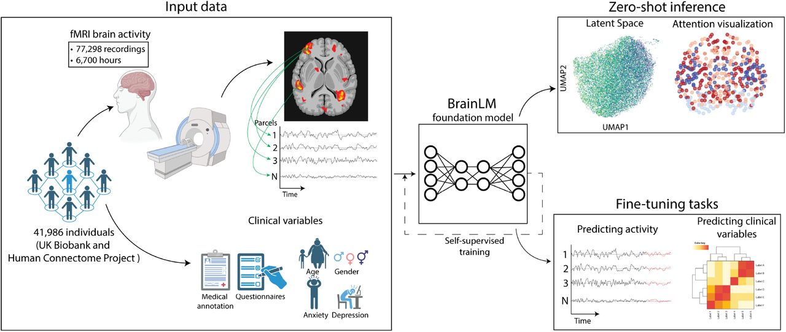
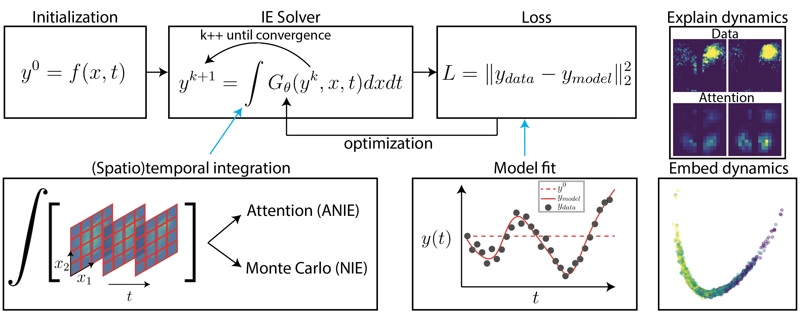
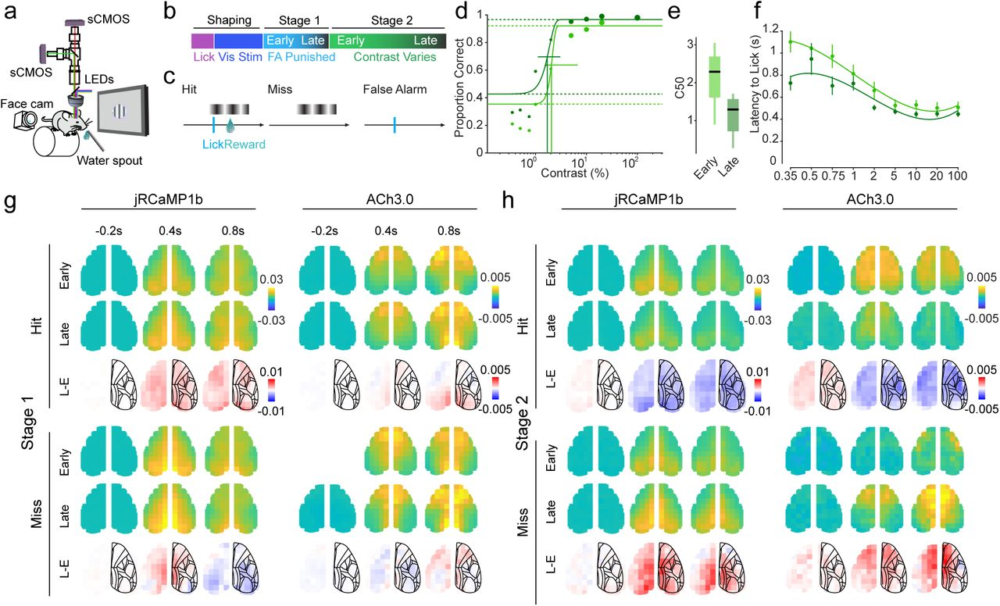
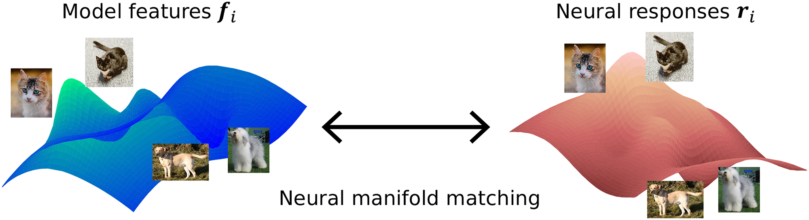

Machine Learning for Neural Dynamics
Wu Tsai Fellow · Yale University · Cardin Lab
Combining deep learning, mathematical modeling, and neuroscience to tackle fundamental questions about brain computation.

BrainLM is a foundation model trained on 6,700 hours of fMRI recordings. It predicts clinical variables, forecasts future brain states, and discovers functional networks through zero-shot inference.
ICLR 2024
Attentional Neural Integral Equations (ANIE) learn unknown integral operators from data, providing a principled framework for modeling spatiotemporal dynamics in physical and biological systems.
Nature Machine Intelligence 2024
A structured multimodal transformer combining masked autoencoding with causal attention to reveal selective changes in cholinergic signaling during visual perceptual learning.
bioRxiv 2025
Robust deep learning models rely on low-frequency information. Local convolutions induce an implicit bias toward high-frequency adversarial examples via the Fourier Uncertainty Principle.
PLOS Comp. Bio. 2023 · Frontiers 2024